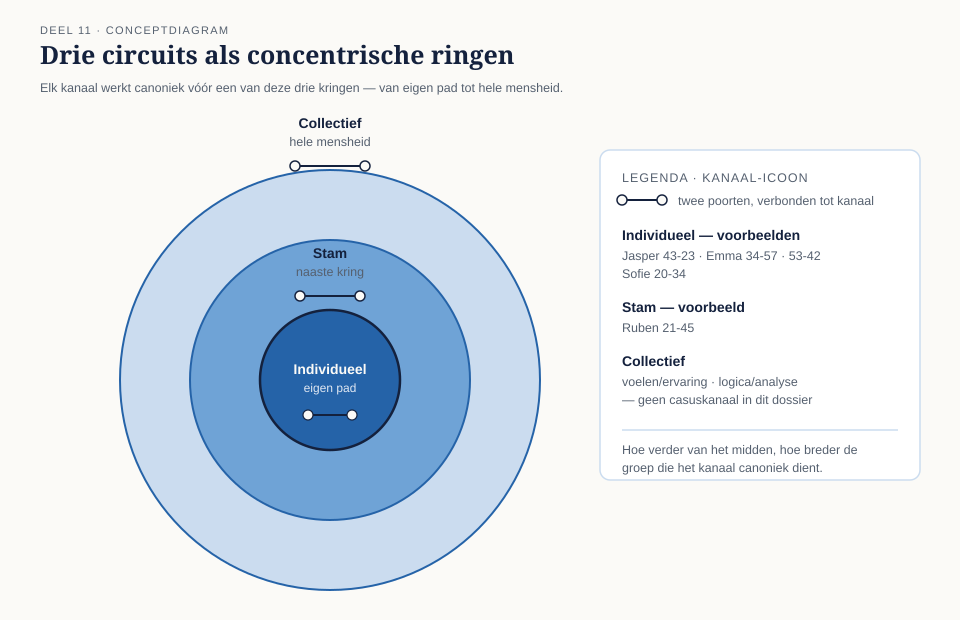
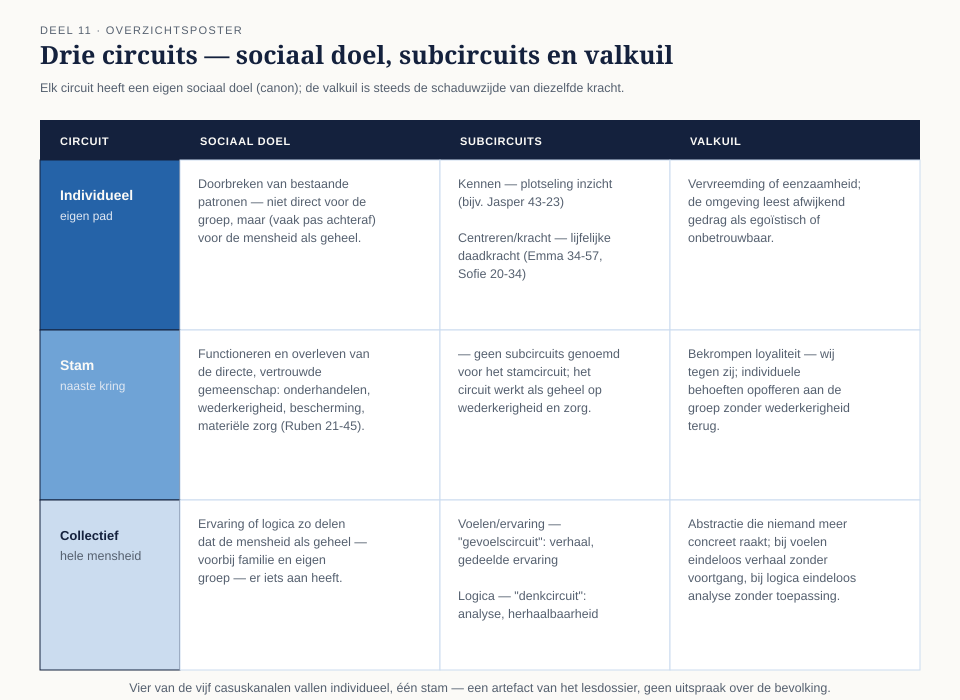

Tot nu toe was elk kanaal een op zichzelf staand thema. Dit deel voegt een sociologische laag toe: elk kanaal werkt canoniek primair vóór het individu, de naaste kring, of de hele mensheid. Die vraag — voor wie? — geeft de vijf casuskanalen uit deel 10 een bredere laag, en levert een nieuw reflectie-instrument op: circuit-overwicht.
8secties
3circuits
7controlevragen
5casuskanalen ingedeeld
Positionering. De indeling in circuits is canonieke Human Design-theorie, niet empirisch onderbouwd. De drieslag individu-groep-mensheid is op zichzelf een herkenbaar sociologisch onderscheid — wat de canon toevoegt (dat dit uit een geboortemoment af te lezen zou zijn) is dat niet. Behandel circuits als reflectie-instrument, niet als bewezen indeling van mensen.
01
Waarom kanalen groeperen
⏱ 10 min
Na losse poorten (deel 1, 10) en losse kanalen (deel 10) is dit deel de eerste laag die kanalen groepeert. De canon deelt alle 36 kanalen in bij drie grote circuits, elk met een eigen sociaal doel: voor wie stroomt de energie of informatie van dit kanaal eigenlijk? Die vraag — individu, naaste kring, of de hele mensheid — is het hoofdthema van vandaag, en geeft de vijf casuskanalen uit deel 10 een nieuwe, bredere laag.
Tot nu toe behandelde je elk kanaal als een op zichzelf staand thema. De canon voegt daar een sociologische laag aan toe: elk kanaal zou primair voor wie werken — voor de persoon zelf (individueel), voor een kleine vertrouwde kring (stam), of voor de mensheid als geheel (collectief). Dat "voor wie" bepaalt niet alleen de inhoud van het kanaal maar ook het soort weerstand of waardering dat het opwekt: wat in het ene circuit gewaardeerd wordt, wordt in een ander circuit soms juist gewantrouwd.
Leerdoelen van dit deel
Na dit deel kun je: de drie circuits benoemen met hun sociale doel en canonieke valkuil; de twee subcircuits van het collectieve circuit (voelen/patroon en logica/patroon) onderscheiden; de vijf casuskanalen indelen bij hun circuit en beargumenteren waarom; en reflecteren op wat overwicht van één circuit in een kaart betekent — als hypothese, niet als vaststaand gegeven.

Figuur 11-1 — de drie circuits als concentrische ringen: hoe verder van het midden, hoe breder de groep die het kanaal canoniek dient
02
Individueel circuit — het anders-zijn dat later navolging krijgt
⏱ 18 min
Sociaal doel (canon)
Doorbreken van bestaande patronen, niet om er direct een groep mee te dienen maar om — vaak pas achteraf, soms pas na generaties — de mensheid vooruit te helpen door simpelweg anders te zijn en anders te doen. Individuele kanalen keren zich van nature niet naar consensus of naar familie-logica, maar naar de eigen, soms onnavolgbare weg.
Twee subcircuits
De canon onderscheidt binnen dit circuit onder meer een subcircuit gericht op kennen (plotseling inzicht, zoals Jaspers 43-23) en een subcircuit gericht op centreren/kracht (directe, lijfelijke daadkracht, zoals Emma's 34-57 en Sofie's 20-34). Beide delen hetzelfde sociale doel — het individu volgt zijn eigen aard, ongeacht of de omgeving het meteen begrijpt — maar de een uit zich in inzicht, de ander in actie.
Canonieke valkuil
Het individuele circuit kan, onbegrepen, vervreemding of eenzaamheid opleveren; de omgeving leest afwijkend gedrag soms als egoïstisch of onbetrouwbaar, terwijl het canoniek juist "empowerment" voor de lange termijn zou dienen — iets wat pas met terugwerkende kracht nut blijkt te hebben.
03
Stamcircuit — steun, ruil en zorg binnen de eigen kring
⏱ 14 min
Sociaal doel (canon)
Het functioneren en overleven van de directe, vertrouwde gemeenschap — familie, team, buurt. Stamkanalen draaien om onderhandelen, wederkerigheid ("voor wat hoort wat"), bescherming en materiële zorg voor wie dichtbij staat. Ruben's kanaal 21-45 (hart-keel, controle over gedeelde middelen) is hiervan het voorbeeld uit het casusdossier: leiderschap over bezit en organisatie is bij uitstek een stam-thema — het dient specifiek de groep waarbinnen het opereert, niet de mensheid in het algemeen.
Canonieke valkuil
Stamlogica kan omslaan in bekrompen loyaliteit — wij tegen zij, of het opofferen van individuele behoeften aan de groepsbelangen zonder wederkerigheid terug te krijgen. Het "voor wat hoort wat"-mechanisme werkt goed binnen de kring en juist daardoor slecht daarbuiten.
04
Collectief circuit — patronen delen met de hele mensheid
⏱ 20 min
Sociaal doel (canon)
Ervaring of logica zo delen dat de mensheid als geheel — voorbij familie en eigen groep — er iets aan heeft. Dit circuit kent twee subcircuits met een duidelijk verschillende toon:
Voelen/ervaring (het "gevoelscircuit"): patronen delen via verhaal, gevoel en gedeelde ervaring — dichter bij kunst en verbinding dan bij bewijsvoering.
Logica ("het denkcircuit"): patronen delen via analyse en herhaalbare, navolgbare logica — dichter bij wetenschap en systeem dan bij verhaal.
Canonieke valkuil
Collectieve kanalen kunnen zich verliezen in abstractie die niemand concreet meer raakt, of — bij het voelen-subcircuit — in eindeloos herhaalde verhalen zonder voortgang; bij het logica-subcircuit in eindeloos herhaalde analyse zonder toepassing.

Figuur 11-2 — de drie circuits naast elkaar: sociaal doel, subcircuits en valkuil
Controlevragen
Uit Werkboek deel 11, Opdracht 11.1 — drie doelen, drie kernwoorden
1Vat het sociale doel van elk van de drie circuits samen in maximaal vijf woorden, plus de bijbehorende valkuil.Toon antwoord
Individueel: eigen pad, later navolging — valkuil: vervreemding/eenzaamheid. Stam: steun en ruil in de kring — valkuil: bekrompen wij-tegen-zij-loyaliteit. Collectief: patronen delen met de mensheid — valkuil: abstractie die niemand meer raakt (of eindeloze herhaling zonder voortgang/toepassing).
Uit Werkboek deel 11, Opdracht 11.3 — collectief circuit, uitgediept
2Waarom is het zinvol om, naast de vier casuskanalen uit het individuele en stamcircuit, ook zelf een kanaal uit het collectieve circuit op te zoeken?Toon antwoord
Omdat geen van de vijf casuskanalen in het lesdossier tot het collectieve circuit behoort (§3) — zonder eigen onderzoek zou dit hele circuit alleen in theorie behandeld worden. Doorloop met naslagwerk het vierstappenplan van deel 10 (poorten/centra, poortthema's, kanaalthema, stapelen) en voeg een vijfde stap toe: welk circuit — voelen of logica — en welk sociaal doel dient dit kanaal volgens de canon?
05
De vijf casuskanalen, ingedeeld
⏱ 16 min
Persoon
Kanaal
Circuit
Motivering
Jasper
43-23
Individueel (kennen)
Plotseling, persoonlijk inzicht dat pas later — als het getimed wordt gedeeld — de groep bereikt
Emma
34-57
Individueel (centreren)
Directe, lijfelijke kracht/intuïtie, van nature niet gericht op consensus
Emma
53-42
Individueel (centreren)
Eigen ontwikkelcyclus dragen — groei die primair de persoon zelf voltooit
Sofie
20-34
Individueel (centreren)
Onmiddellijke actie vanuit het eigen sacraal, geen tussenstap via overleg
Ruben
21-45
Stam
Controle over en verdeling van gedeelde middelen binnen een specifieke gemeenschap
Vier van de vijf casuskanalen vallen in het individuele circuit en één in het stamcircuit; geen enkele in het collectieve. Dat is geen uitspraak over de bevolking — het is een artefact van hoe dit lesdossier is samengesteld (deel 1, spelregel 2) om de meeste didactische spreiding te bieden over type, autoriteit en profiel. In het werkboek onderzoek je zelf een kanaal uit het collectieve circuit, zodat alle drie de circuits met evenveel diepgang aan bod komen.
Controlevragen
Uit Werkboek deel 11, Opdracht 11.2 — wie profiteert? (drie van de zes gedragsvoorbeelden)
1Een uitvinder werkt tien jaar alleen aan een idee dat niemand begrijpt, tot het decennia later de norm wordt. Welk circuit ligt het meest voor de hand?Toon antwoord
Individueel. Het idee dient in eerste instantie niemand direct — geen groep, geen kring — en krijgt pas met terugwerkende kracht, "decennia later", navolging. Precies het patroon uit §2.1: anders-zijn dat pas achteraf de mensheid vooruit helpt.
2Een familie regelt onderling een lening tussen ouders en kinderen, met een stilzwijgende afspraak over terugbetaling in natura. Welk circuit ligt het meest voor de hand?Toon antwoord
Stam. Materiële zorg binnen de directe, vertrouwde kring, met een impliciet "voor wat hoort wat" — de kernbeschrijving van het stamcircuit in §2.2, vergelijkbaar met Ruben's 21-45.
3Een kunstenaar maakt werk dat een universeel gevoel van verlies invoelbaar maakt voor een breed publiek. Welk circuit ligt het meest voor de hand?Toon antwoord
Collectief, subcircuit voelen/ervaring. Het werk deelt een patroon (verlies) met de mensheid als geheel — voorbij familie en eigen kring — via gevoel en gedeelde ervaring, niet via analyse of bewijsvoering. Dit is het "gevoelscircuit" uit §2.3.
Uit Werkboek deel 11, Opdracht 11.4 — de vijf casuskanalen, herzien
4Lees de indeling in de tabel hierboven. Kies één kanaal waarbij je zelf een andere motivering zou kunnen bedenken — de circuit-indeling blijft gelijk. Wat zou dat voor Ruben's 21-45 kunnen zijn?Toon antwoord
De tabel motiveert 21-45 vanuit "controle over gedeelde middelen". Een even valide, aanvullende motivering vanuit dezelfde stamlogica: het kanaal draait ook om leiderschap dat de groep richting geeft — Ruben's rol als schoolleider die de organisatie stuurt — wat evengoed bij het stamcircuit hoort, omdat het de eigen gemeenschap dient en niet de mensheid in het algemeen. De circuit-indeling verandert niet; alleen het accent binnen de motivering.
06
Circuit-overwicht: een hypothese, geen etiket
⏱ 14 min
Bevat iemands kaart veel kanalen uit hetzelfde circuit, dan spreekt de canon soms van "circuit-overwicht" — een vermoedelijke primaire sociale oriëntatie: gericht op het eigen pad (individueel), op de vertrouwde kring (stam), of op grotere patronen voor de mensheid (collectief). Twee waarschuwingen zijn hier op hun plaats, in het verlengde van steeds terugkerende lessen uit deze cursus.
Ten eerste: de meeste charts mengen circuits; zuivere overwicht is eerder uitzondering dan regel. Ten tweede, en belangrijker: circuit-overwicht is nooit een vrijbrief ("ik ben nu eenmaal individueel, dus ik hoef niet aan de groep te denken") — het is, zoals alles in deze cursus, een herkenningsvraag: merk je dat je van nature sneller denkt in termen van je eigen pad, je naaste kring, of het grotere geheel?
Controlevraag
Uit Werkboek deel 11, Opdracht 11.6 — de vrijbrief-valkuil
1Stelling: "Ik heb vooral individuele kanalen, dus ik hoef me niet aan te passen aan mijn team." Wat gaat hier mis, en wat is de correcte, niet-vrijbrief-versie van deze zin?Toon antwoord
De stelling gebruikt circuit-overwicht als excuus om verantwoordelijkheid af te schuiven, terwijl het canoniek een herkenningsvraag is, geen vrijbrief. De niet-vrijbrief-versie erkent de oriëntatie zonder haar als rechtvaardiging te gebruiken, bijvoorbeeld: "Ik merk dat ik van nature sneller denk vanuit mijn eigen pad dan vanuit het team — dat is nuttig om te weten, en het betekent dat ik er bewust extra aandacht aan moet besteden wanneer teamafstemming nodig is."
07
Eerlijke kanttekening: sociologie in geboortekaart-vorm
⏱ 12 min
Van alle lagen tot nu toe leunt deze het dichtst aan tegen bestaande sociaalwetenschappelijke ideeën: onderscheid tussen individuele afwijking, groepsloyaliteit en universele waarden is een terugkerend thema in sociologie en antropologie, los van Human Design. Wat de canon toevoegt — dat deze oriëntaties uit een geboortemoment af te lezen zouden zijn via specifieke kanalen — is, zoals steeds, niet onderbouwd.
De drieslag zelf (individu-groep-mensheid) is intuïtief herkenbaar juist omdat ze al buiten dit systeem bekend is; dat maakt haar bruikbaar als reflectie-instrument en tegelijk extra gevoelig voor Barnum-achtige herkenning. Behandel circuit-duidingen daarom net zo terughoudend als elke andere laag: nuttig kader, geen bewezen indeling van mensen.
08
Samenvatting en begrippenlijst
⏱ 10 min
Circuits groeperen kanalen naar hun canonieke sociale doel: individueel (eigen pad, later navolging), stam (steun en ruil binnen de naaste kring) en collectief (patronen delen met de hele mensheid, gesplitst in voelen en logica). Elk circuit kent een eigen valkuil die precies de schaduwzijde van zijn kracht is. De vijf casuskanalen vallen overwegend individueel en éénmaal stam, wat een artefact is van het lesdossier, niet van de werkelijkheid. Circuit-overwicht is een canonieke hypothese over sociale oriëntatie, altijd te lezen als toetsvraag — nooit als vrijbrief of vaststaand etiket.
Begrippenlijst deel 11
Begrip
Omschrijving
Circuit
Groep kanalen met een gedeeld sociaal doel (canon)
Individueel circuit
Gericht op het eigen pad; subcircuits kennen en centreren/kracht
Stamcircuit
Gericht op steun, ruil en zorg binnen de naaste kring
Collectief circuit
Gericht op patronen delen met de hele mensheid; subcircuits voelen en logica
Circuit-overwicht
Canonieke hypothese: veel kanalen uit één circuit wijst op een primaire sociale oriëntatie
Verder naar deel 12
Deel 12 behandelt het definitietype (single, split, triple split): hoe de gedefinieerde centra van iemand wel of niet onderling verbonden zijn, en wat dat betekent voor hoe iemand met anderen "aansluit". Breng je volledige lijst gedefinieerde centra en kanalen mee.